T90 Titans League returns in February 2027! This recurring competition provides a consistent, high-level stage for established pros to sharpen their skills, while giving newcomers the chance to prove themselves and break into the top tier. After expanding the format in Season 5, a total of 72 players now get the chance to battle through a full group stage and knockout system with the objective of promoting into a higher league and ultimately becoming the TTL Platinum champion. Just like last season, a $100,000 prize pool will be spread across nearly 100 competitors, T90 Titans League delivers one of the most open and rewarding pathways into the Age of Empires pro scene. 8 spots in Silver League are still open. Those 8 spots will be filled through the Bronze Qualifier, which runs in December of this year:
| T90 Titans League Bronze League Schedule | |
|---|---|
| TTL Ladder | September 13th - November 27th |
| Round 1 | November 30th - December 6th |
| Round 2 | December 7th - December 13th |
| Round 3 | December 14th - December 20th |
T90 Titans League Bronze Season 6 follows the rules of the Unified Tournament Handbook with the following changes:
- All players must be in a dedicated Discord voice chat while playing their set, to allow admins to contact them if needed.
- Additional Bronze-specific rule changes will be published here before the start of the event. All other rules default to the Unified Tournament Handbook.
- Seeding is based on the TTL 6 ladder. Returning players that were relegated from TTL Silver league will be seed 1 in their respective parts of the bracket.
All breaches (including those not detailed in this handbook) will be handled at the sole discretion of the Tournament Admins, in accordance with the authority granted by the Unified Tournament Handbook.
1. Bronze League Format
A 56 player bracket will be formed from the 8 relegated players from T90 Titans League Silver season 5, joined by the 48 highest-ranked eligible players on the TTL 6 Ladder who have signed up and are not already qualified for Platinum/Gold/Silver. This bracket is split to form 8 small brackets as shown below:
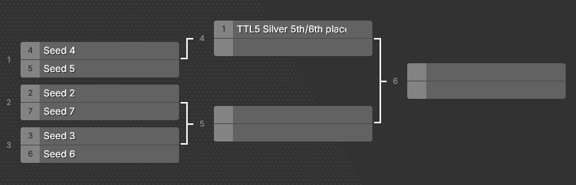
T90 Titans League 6 Bronze small bracket (1 of 8)
The players relegated from T90 Titans League Silver season 5 will make up the top 8 seeds and receive a bye in the first round. The remaining seeds are decided by the TTL 6 ladder ranking. The winners of each small bracket will qualify for the Silver league in season 6.
If for any reason one of the relegated players from TTL Silver season 5 is not able to play in the Bronze Qualifier, 2 players will be added to play in the first round and there will be no bye for the number 1 seed for that bracket. If players that are already qualified for TTL 6 Platinum, Gold or Silver Leagues drop out, additional spots for the Silver League become available and will be filled by adding more small brackets (1 for every open spot in TTL Silver). These brackets will only include players that qualified through the ladder, with no bye for the highest seed in the bracket.
1.1. Sign up & Seeding
Everyone can sign up using the signup form. Signups close November 27th at 23:59 GMT. To be eligible for the tournament, players have to fulfill the following requirements:
- Players have at least 100 ranked 1v1 games.
- Players have at least 50 ranked 1v1 games during the time period the ladder is active (September 13th 22 GMT - November 27th 22 GMT).
- Players have to be in the TTL Discord.
- Players have to be available for TTL Bronze and Silver timelines.
With the exception of the 8 players that were relegated from the TTL Silver League in season 5, all players will be seeded by the T90 Titans League ranking system, which can be found on the rankings tab of the Spectator Dashboard under ‘TTL6’. For seeding, the rating at the time of the signup deadline (November 27th, 23:59 GMT) is used. The columns are explained below:
- Rating: TTL ladder rating (Current Elo of highest account + adjustment + penalty +25% of atp).
- Adjustment: Elo adjustment for losing against higher elo players on a smurf account. Elo can also be gained/lost in non-smurf matchups.
- Penalty: Elo adjustment for dodging (-16 per dodge) and losing on a smurf account (equal to the amount of Elo lost if they had not been on a smurf).
- ATP@25%: 25% of total ATP, added to rating to reward results in events in the last calendar year.
2. Platinum/Gold/Silver Replacement Qualifier
If a player that is qualified for Platinum League in T90 Titans League 6 chooses not to participate, there will be a replacement qualifier between the 4 players that lost the Platinum play-ins in Season 5. These players are: Wide (1), Margougou (2), Kasva (3) & Villese (4).
If a player that is qualified for Gold League in T90 Titans League 6 chooses not to participate, or if a player from Gold league is replacing a player in Platinum league, there will be a replacement qualifier between the 4 players that lost the Gold league play-ins in Season 5. These players are: Whocl (1), Gabi (2), Antagonist (3) & Ozone (4).
If a player that is qualified for Silver League in T90 Titans League 6 chooses not to participate, or if a player from Silver league is replacing a player in Gold league, there will not be a replacement qualifier. Instead, an extra spot will be added to the TTL 6 Bronze league.
Replacement qualifiers (Bo5): November 30th - December 6th
3. Match Settings
All sets are played as a Best of 5. This is valid for T90 Titans League 6 Bronze and replacement qualifiers.
Best of 5
- Game 1: Remaining map after the draft (Admin Pick)
- Game 2: Loser of previous game picks any remaining home map
- Game 3: Loser of previous game picks any remaining home map
- Game 4: Loser of previous game picks any remaining home map
- Game 5: Loser of previous game picks any remaining home map
The higher seeded player may decide if they wish to be A or B in the draft. They must be the same for both drafts.
Civ Draft: 6 Bans each, 6 Picks each
Players may not repeat any of their civilizations during the set.
4. Maps
Titans League Bronze season 6 will repeat the map pool of TTL 5, with a total of 15 total maps. The map pack can be acquired by subscribing to the map mod using this link or by searching for “TTL6 Bronze Maps” in the in-game mod workshop.
The map pack is edited and maintained by T-West.
African River 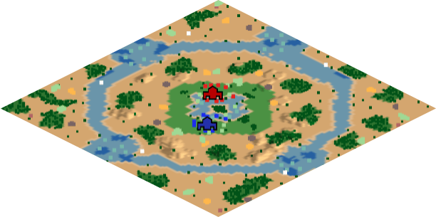 Cebdos |
Bypass 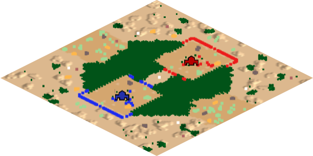 Chrazini |
Coast Arena 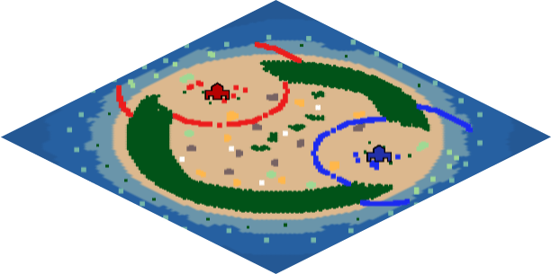 TheMadCADer |
Dzimbabwe 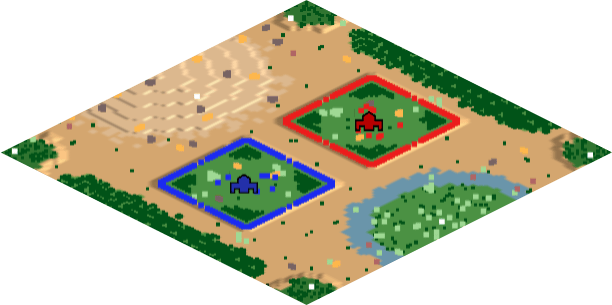 Marintho |
High Tides 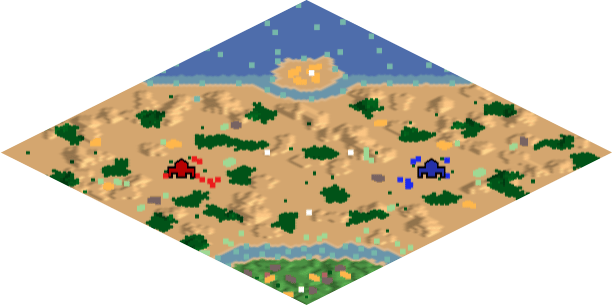 AlgernonR |
Monocle 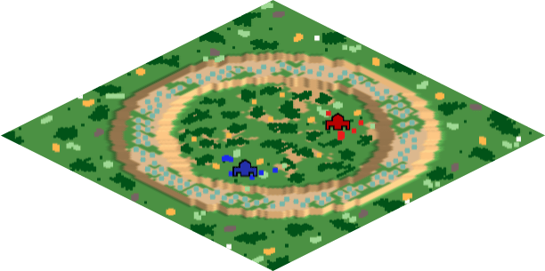 Chrazini |
Mudflow 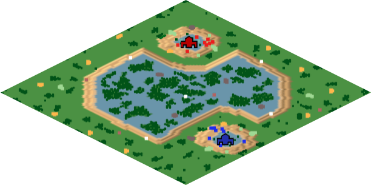 Chrazini |
Northern Crossings 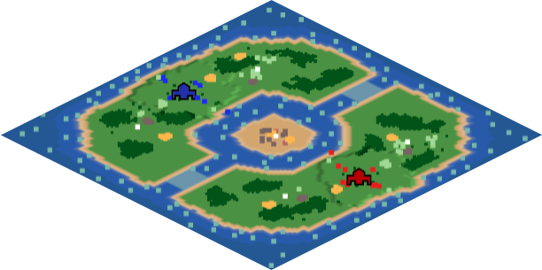 Chrazini |
Quarry 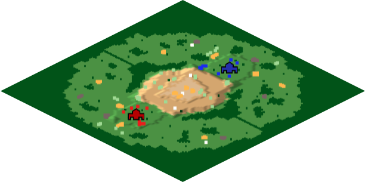 HenkDeSuperNerd |
Reverse Acropolis 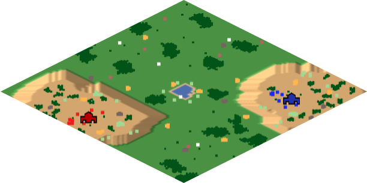 YoungPanda95 |
Seychelles 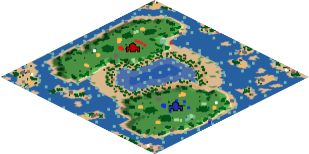 Deathcounter |
Slopes 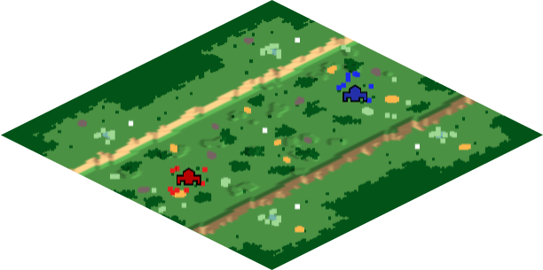 AlgernonR |
Stranded 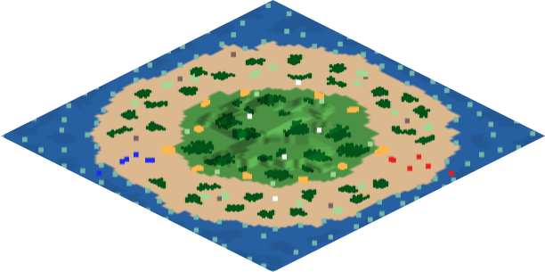 Chrazini |
Tulou (Regicide) 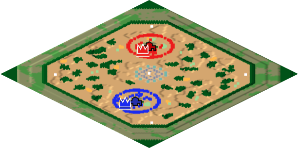 Marintho |
Valley 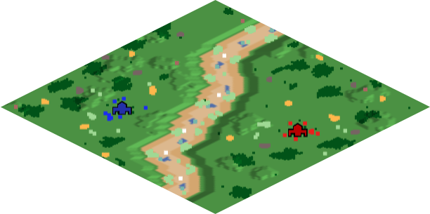 Forgotten Empires |
5. Lobby Settings
Both players are equally responsible for making sure the lobby settings are correct.
Wrong settings may result in a game being replayed and/or a prize pool deduction for both players. The server that is chosen has to be the fairest server for both players.
5.1 Pre-Lobby Settings
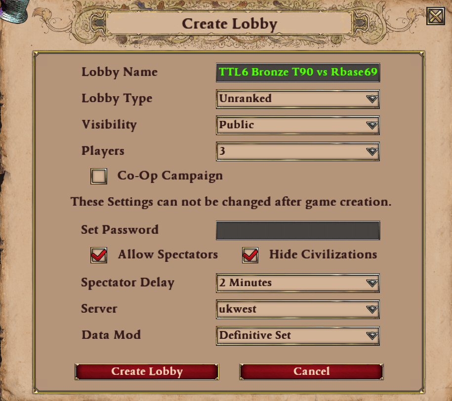
Screenshot of the Pre-Lobby Settings to use
5.2 Lobby Settings
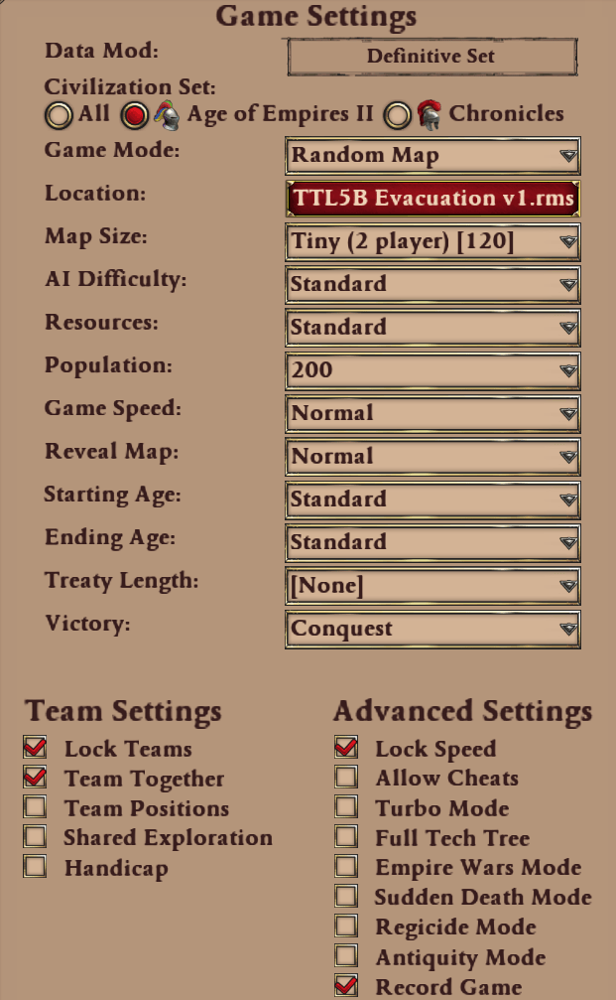
Screenshot of the Lobby Settings to use
6. Contact
For any questions or inquiries regarding the event, please read the handbook and ask in the Discord.
If you cannot find an answer please reach out to one of the admins:
Admin: JBR
- Discord: jbr1989
- Steam: https://steamcommunity.com/id/jbr_aoe/
- Time zone: East Australia GMT + 11
Admin: Rbase96
- Discord: rbase96
- Steam: https://steamcommunity.com/id/RBase96/
- Time zone: West Europe, GMT + 2
Admin: Feage
- Discord: feage
- Steam: –
- Time zone: Brazil, GMT - 3
7. Prize Pool
The prize pool for T90 Titans League 6 Bronze is $1,600. In case there are more qualifier spots, an extra $200 is added per additional bracket.
- Round 1 losers: $0
- Round 2 losers: $50
- Round 3 losers: $100
- Round 3 winners: Qualify for T90 Titans League Season 6 Silver League
All players that qualify for T90 Titans League 6 Silver or Gold will make at least $150 in the main event.
8. Event Coverage
8.1. All Coverage
- All broadcasters (including players) must register here their intention to stream any games, so that they can be given access to the appropriate Discord channels.
- All broadcasting must include the tournament logo before, after and in-between tournament games. Assets can be found in the #caster-resources channel on Discord, or at the end of this document.
- The tournament logo must be visible at all times while in-game.
- All broadcasters must add a custom chat command mentioning the sponsor, & linking to the
hosts stream & the announcement post or Liquipedia.
- Example text:
!TTL=T90 Titans League is hosted by T90Official (https://twitch.tv/T90Official) & sponsored by World’s Edge. You can read more about it here - https://liquipedia.net/ageofempires/T90_Titans_League/6/Bronze_League
- Example text:
- Content creators are free to upload videos to video sharing platforms at their convenience.
Games will be either available live or released alongside the main stream where they are being
played in advance.
- When uploading gameplay from this event to other video sharing platforms, it must be clear, by using the title or description, who the tournament’s host is and what event it comes from.
- There must always be a direct clickable link to the official YouTube channel of the host (https://www.youtube.com/c/T90Official) in the description.
- T90 Titans League Bronze Rounds 1 and 2 will be cast according to player scheduling. The final round (Round 3) will be covered live or as recs on a set schedule (tbd) between December 14th and December 20th.
8.2. Players
-
Players will be given a large degree of flexibility over scheduling, and are allowed to stream
their POV.
- For Round 3, players must play in a scheduled time slot if they want to stream their POV
- Players must use a two minute stream delay. In rare instances, players may be requested by
admins to use a longer spectator delay.
- The spectator delay MUST match the stream delay (Standard 2 minutes).
- Players must not have access to any information which could give an unfair advantage at any stage.
- Players streaming their games via Twitch/Facebook/YouTube/Douyu etc need to disable text to speech alerts and ensure that they cannot see their chat during their matches. Reading or interacting with chat between the start of the draft and the end of the last game can lead to a prize money deduction or immediate disqualification.
8.3. Casters
- In the event that there are multiple matches being played at the same time, best efforts will be made to provide casters with recorded games that are spoiler free.
9. Assets

10. Changelog
- 2026-11-10 - v1.3
- Updated map pack link
- Specified that extra brackets to fill Silver league spots will only include players that qualified through the ladder, with no bye for the highest seed in the bracket
- 2026-11-10 - v1.2
- Added TTL 6 Bronze Logo under Assets
- 2026-09-13 - v1.1
- Final dates included
- 2026-08-25 - v1
- Initial Handbook version